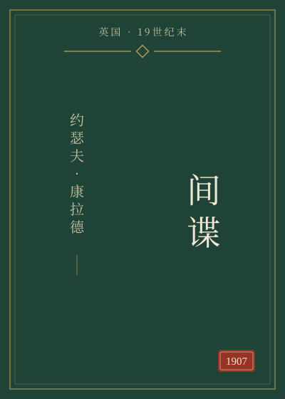
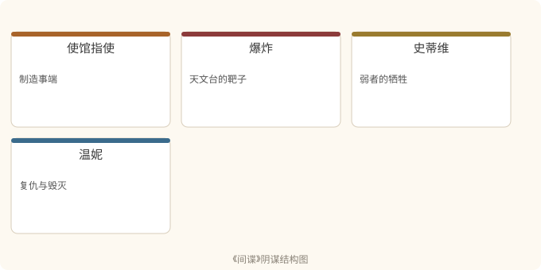

间谍
一、基本信息
| 作者 | 康拉德 |
|---|---|
| 成书/出版 | 1907年出版（作者页 B124 口径：间谍（1907）） Joseph Conrad — Encyclopaedia Britannica（百科全书） |
| 国别/地区 | 英国 |
| 时代 | 近代 · 19世纪末 |
| 体裁 | 长篇小说 |
| 语言 | 英语 |

《间谍》阴谋结构图（主题·结构图）
二、创作背景
作者页（B124）：康拉德 major_works 载'吉姆爷（1900）、诺斯特罗莫（1904）、间谍（1907）'（B124 作者页定位，详见 heianddixin 条核对）。
题材（通说待核）：伦敦的无政府主义阴谋——受1894年格林尼治天文台爆炸案启发。
三、内容脉络
沃洛克受使馆指使制造爆炸——炸死弱智的弟弟史蒂维（通说待核）。
温妮的结局与'间谍'的循环（通说待核）。
四、主要人物表
| 人物 | 身份 | 说明 |
|---|---|---|
| 沃洛克 | 双面间谍 | 阴谋执行者（通说待核） |
| 温妮 | 妻子 | 复仇者（通说待核） |
五、主题与艺术特点
- 无政府主义的讽刺画（通说）。
- 伦敦的'黑暗'（通说）。
- 弱者的毁灭（通说待核）。
六、影响与评论
- 作者页：康拉德政治小说（B124 作者页口径）。
Joseph Conrad — Encyclopaedia Britannica（百科全书） - 对20世纪'恐怖主义书写'的先声（通说待核）。
Joseph Conrad — Encyclopaedia Britannica（百科全书）
七、阅读建议
难点
- 无政府主义史背景。
- 黑色反讽的语调。
- 《间谍》（人民文学出版社/上海译文版本，通说待核）。
- 英文原版（公有领域）。
康拉德政治三部曲之末。
八、待核实
- 1907年出版（Methuen说）核对。
- 沃洛克/温妮/史蒂维人名核对。
- 格林尼治爆炸案对应待核。
本页主要来源
康拉德的其他收录作品：黑暗的心